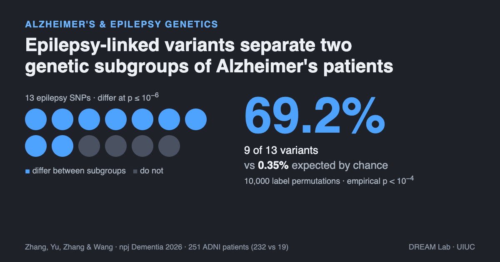
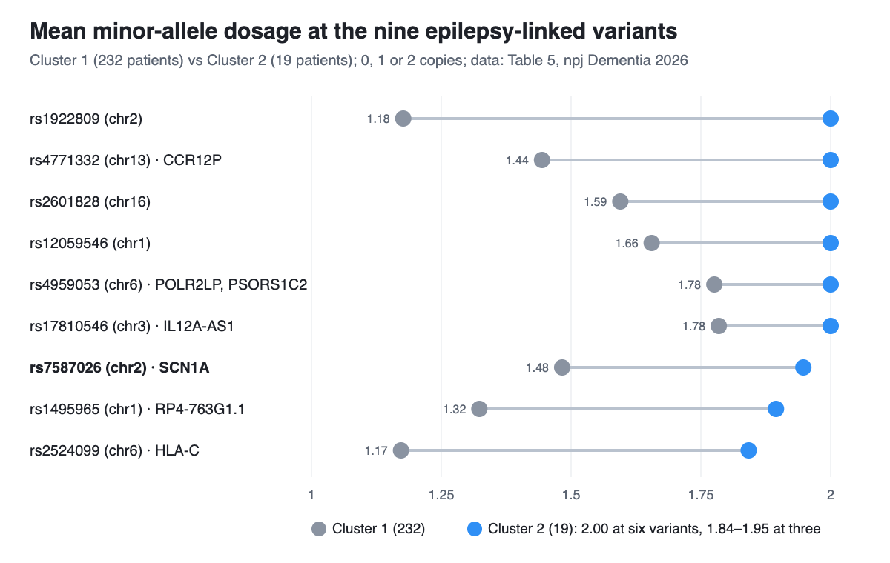

Is There a Genetic Link Between Alzheimer's and Epilepsy?
Population studies find a modest overlap between the two diseases. Looking inside one Alzheimer's cohort, we found that epilepsy-associated variants separate two genetic subgroups of patients far more often than chance.
By Jiahui Zhang, Haohan Wang, and others · · About our npj Dementia 2026 paper
Is there a genetic link between Alzheimer's and epilepsy? People with Alzheimer's have seizures more often than others their age, and large genetic studies find a partial, modest overlap between the two diseases. Our paper, Stratifying Alzheimer's disease by patient-specific genetic signatures reveals cognition-linked and cross-disease heterogeneity, by Jiahui Zhang, Ziyu Yu, Xingcai Zhang and Haohan Wang (University of Illinois Urbana-Champaign and Stanford University School of Medicine, npj Dementia, 2026), asks a narrower question inside one cohort: do epilepsy-associated variants differ between genetic subgroups of Alzheimer's patients? In 251 patients from the Alzheimer's Disease Neuroimaging Initiative (ADNI), 9 of 13 such variants did, at p ≤ 10−6, where chance predicts 0.35%. That is an association in one cohort, not evidence that one disease causes the other.
Key findings
- In the npj Dementia 2026 study by Zhang, Yu, Zhang and Wang (University of Illinois Urbana-Champaign), 9 of 13 epilepsy-associated variants (69.2%) differed in allele dosage between two genetic subgroups of 251 Alzheimer's patients in ADNI at p ≤ 10−6, against a mean of 0.35% in 10,000 random relabellings of the patients (empirical p < 10−4).
- Epilepsy variants gave the largest share among the four brain-trait sets tested in the npj Dementia 2026 study; variants linked to autism (26 of 49, 53.1%), ADHD (28 of 56, 50.0%) and memory performance (18 of 39, 46.2%) also separated the subgroups far beyond chance.
- One of the separating epilepsy variants, rs7587026 in the SCN1A region (the gene for the Nav1.1 sodium channel), is the same SNP that a 2013 Brain genome-wide study linked to mesial temporal lobe epilepsy with hippocampal sclerosis and febrile seizures (P = 3.36 × 10−9).
- Population-level studies answer a different question: a 2023 Neurology Mendelian randomization study linked genetic liability to Alzheimer's with a 5.3% higher odds of generalized epilepsy (OR 1.053), and a 2025 Scientific Reports study found eight shared risk variants, mostly around APOE.
Note for patients and families: this is early research on groups of people in one study. It does not offer a test, a diagnosis or a treatment recommendation, and it does not mean that epilepsy leads to Alzheimer's or the reverse. If you have questions about seizures, memory changes or genetic risk for yourself or a relative, a neurologist or genetic counselor is the right person to ask.
Why ask whether Alzheimer's and epilepsy share genes?
Two observations keep bringing the diseases together. Clinically, seizures and silent epileptiform activity (seizure-like electrical spikes without visible seizures) are more common in Alzheimer's than in people of the same age without it. Biologically, Alzheimer's pathology has been linked to overexcitable neural circuits, and in mouse models of Alzheimer's that hyperexcitability tracks memory problems. If part of the overlap is genetic, some people with Alzheimer's may carry variants that tilt their brains towards hyperexcitability, and they might differ from other patients in how the disease shows up.
Our first post on this paper, Are there genetic subtypes of Alzheimer's disease?, explains the method and the main result: patient-specific genetic profiles split 251 Alzheimer's patients into two groups, of 232 and 19, and the smaller group did worse on all five episodic-memory measures reported. This post is about the epilepsy part of the same study.
Key terms
- Epilepsy
- A brain condition with a lasting tendency to unprovoked seizures; temporal lobe epilepsy is a common form in adults.
- Hippocampal sclerosis
- Scarring and loss of neurons in the hippocampus, seen in many people with mesial temporal lobe epilepsy and also in some older adults with dementia.
- Subclinical epileptiform activity
- Seizure-like spikes in brain recordings (EEG or MEG) that occur without a visible seizure.
- SCN1A and Nav1.1
- SCN1A is the gene for Nav1.1, a voltage-gated sodium channel that inhibitory interneurons rely on to fire and keep brain circuits in balance.
- Single-nucleotide polymorphism (SNP)
- A position in the genome where people commonly carry different DNA letters, usually coded as 0, 1 or 2 copies of one allele (the dosage).
- Mendelian randomization
- A method that uses genetic variants as natural experiments to estimate whether one trait may causally affect another across a population.
- Label-permutation enrichment
- A test that reshuffles group labels many times to see how often a result as strong as the real one appears by chance.
How did we test epilepsy variants inside Alzheimer's patients?
![Diagram contrasting two questions. Left, population level: do Alzheimer's and epilepsy share genetic risk across the population? This compares Alzheimer's cases with controls and epilepsy cases with controls, using Mendelian randomization, shared risk scores or co-expression networks on thousands to hundreds of thousands of people, for example Fang et al., Neurology 2023 and Fu et al., Scientific Reports 2025. Right, within Alzheimer's patients (this study): do epilepsy-linked variants differ between subgroups of patients? This compares Cluster 1 with 232 patients and Cluster 2 with 19 patients, using Het-PR profiles, clustering and a label-permutation test on 251 Alzheimer's patients in ADNI; 9 of 13 epilepsy SNPs differ, against 0.35% by chance. Both describe association, not causation.](imgs/alzheimers_epilepsy_genetic_link/figure_two_questions.png)
The subgroups came first, and they were found without any epilepsy information. Heteroscedastic personalized regression (Het-PR) estimated, for each of the 251 Alzheimer's patients in ADNI, a score for each of 1,684 exonic SNPs in Alzheimer's-related genes; clustering those patient-by-SNP profiles gave Cluster 1 (232 patients) and Cluster 2 (19 patients). The first post covers how Het-PR works and the checks for ancestry, genotype quality and relatedness.
Only then did the authors look at other brain traits. They took variants reported in the NHGRI-EBI GWAS Catalog for epilepsy, ADHD, autism spectrum disorder and memory performance (p < 10−6 in the original studies), removed any variant annotated to an Alzheimer's-related gene so the test would not reuse the clustering features, and kept those present among the 72,842 background SNPs. That left 13 epilepsy variants, 56 for ADHD, 49 for autism and 39 for memory.
For each variant, a two-sided Welch t-test compared allele dosage between the two clusters. The statistic for a trait was simply how many of its variants passed a threshold (p ≤ 0.05 or p ≤ 10−6). To see what chance alone would give, the cluster labels were shuffled among the 251 patients 10,000 times, keeping the 232:19 split and everything else fixed, and the count was recomputed each time.
How strong is the epilepsy signal compared with ADHD, autism and memory variants?

| Trait-associated SNP set | SNPs tested | Differ at p ≤ 0.05 | Chance at 0.05 (null mean) | Differ at p ≤ 10−6 | Chance at 10−6 (null mean) |
|---|---|---|---|---|---|
| Epilepsy | 13 | 12 (92.3%) | 7.16% | 9 (69.2%) | 0.35% |
| Autism spectrum disorder | 49 | 42 (85.7%) | 6.33% | 26 (53.1%) | 0.90% |
| ADHD | 56 | 46 (82.1%) | 6.20% | 28 (50.0%) | 0.95% |
| Memory performance | 39 | 31 (79.5%) | 8.04% | 18 (46.2%) | 0.83% |
From Table 4 of the paper. The null median was 1–3 variants at p ≤ 0.05 and 0 at p ≤ 10−6 for every set, and no permutation reached the observed count for any set at either threshold (empirical p < 10−4, with a +1 correction).
Two things follow. First, epilepsy is not alone: all four brain-trait sets separate the subgroups, so the paper's own reading is that Alzheimer's heterogeneity in this cohort overlaps with a broader shared architecture of brain-related traits, with neuronal excitability as one prominent axis. Second, the epilepsy set is the smallest (13 variants), so its larger percentage rests on few variants; the comparison between traits is descriptive, not a formal test that epilepsy matters more than autism or ADHD.
The nine epilepsy variants behind the stringent count are listed in the paper's Table 5, which reports each variant's mean dosage in the two clusters:

| SNP | Chr | Mapped genes (±10 kb) | Mean dosage, Cluster 1 (232) | Mean dosage, Cluster 2 (19) | Welch t |
|---|---|---|---|---|---|
| rs1922809 | 2 | – | 1.1767 | 2.0000 | −17.42 |
| rs4771332 | 13 | CCR12P | 1.4440 | 2.0000 | −13.05 |
| rs2601828 | 16 | – | 1.5948 | 2.0000 | −11.22 |
| rs12059546 | 1 | – | 1.6552 | 2.0000 | −9.38 |
| rs4959053 | 6 | POLR2LP, PSORS1C2 | 1.7759 | 2.0000 | −7.62 |
| rs17810546 | 3 | IL12A-AS1 | 1.7845 | 2.0000 | −7.11 |
| rs7587026 | 2 | SCN1A, AC010127.3, Y_RNA | 1.4828 | 1.9474 | −6.88 |
| rs1495965 | 1 | RP4-763G1.1 | 1.3233 | 1.8947 | −6.61 |
| rs2524099 | 6 | HLA-C, USP8P1 | 1.1724 | 1.8421 | −6.81 |
From Table 5 of the paper. The authors treat these as contributors to the set-level result, not as individually validated discoveries. Several lie in noncoding regions, which is common for variants behind complex neurological traits.
What does SCN1A have to do with Alzheimer's?
SCN1A is best known from epilepsy: rare mutations in it cause severe childhood epilepsies, and common variation around it was linked to adult temporal lobe epilepsy in Epilepsy, hippocampal sclerosis and febrile seizures linked by common genetic variation around SCN1A (Kasperavičiūtė, Catarino, Matarin, Sisodiya and colleagues, Brain, 2013). That genome-wide study found its signal in people with mesial temporal lobe epilepsy, hippocampal sclerosis and a history of febrile seizures, with lead SNP rs7587026 in an intron of SCN1A (meta-analysis P = 3.36 × 10−9, odds ratio 1.42); it found no association in the same epilepsy without febrile seizures.
The Alzheimer's connection runs through inhibitory interneurons. In Inhibitory interneuron deficit links altered network activity and cognitive dysfunction in Alzheimer model (Verret, Mucke, Palop and colleagues, Cell, 2012), mice carrying human amyloid precursor protein had spontaneous epileptiform discharges and lower Nav1.1, and so did brain tissue from Alzheimer's patients; restoring Nav1.1 in the mice reduced the abnormal synchrony, the memory deficits and early deaths.
Our finding fits beside this work without proving it. rs7587026 is one of nine epilepsy variants that separated the two Alzheimer's subgroups; its mean dosage was 1.48 in Cluster 1 and 1.95 in Cluster 2. The study did not measure Nav1.1, SCN1A expression, EEG or seizures, so it cannot say whether the variant changes anything in these patients' brains. The paper presents the SCN1A locus as a biologically interpretable example that links the set-level result to neuronal excitability.
Do seizures make Alzheimer's worse?
The best-known clinical evidence is Incidence and impact of subclinical epileptiform activity in Alzheimer's disease (Vossel, Mucke, Nagarajan and colleagues, Annals of Neurology, 2016). The team recorded overnight video-EEG and a one-hour MEG with EEG in 33 Alzheimer's patients who had never had a seizure and 19 age-matched controls. Silent epileptiform activity appeared in 42.4% of patients and 10.5% of controls; over about 3.3 years, patients with it lost 3.9 MMSE points a year against 1.6 for those without.
Our study points to a possible genetic side of the same story, and its numbers rhyme with it: the subgroup with the higher dosage at these epilepsy-associated variants is also the one with weaker memory scores (see the first post for those results). But we compared memory at a single time point and had no EEG or seizure data, so we cannot say whether these patients have more epileptiform activity or decline faster. Testing that would need a cohort with genotypes, EEG and follow-up together.
What do population genetic studies say about Alzheimer's and epilepsy?
Several groups have asked the population-level question, with different tools. Their results agree on a modest, partial overlap:
- Mendelian randomization. Alzheimer Disease and Epilepsy: A Mendelian Randomization Study (Fang, Si, Wang, Zhang, Pu and colleagues, Zhejiang University, Neurology, 2023) combined an Alzheimer's GWAS of 111,326 cases and proxies and 677,663 controls with the ILAE epilepsy GWAS (15,212 cases, 29,677 controls). Genetic liability to Alzheimer's was linked to generalized epilepsy (OR 1.053, 95% CI 1.002–1.105) and to focal epilepsy with hippocampal sclerosis (OR 1.013, 95% CI 1.004–1.022); lower genetically predicted spinal-fluid amyloid-β42 was linked to generalized epilepsy. The reverse estimate, focal epilepsy with hippocampal sclerosis to Alzheimer's (OR 3.994), rested on two variants and did not replicate, and the authors call it suggestive. All participants were of European ancestry.
- Shared risk scores in health records. Multi-task learning identifies shared genetic risk for late-onset epilepsy and Alzheimer's disease (Fu, Tran, Pasaniuc, Vossel and Chang, UCLA, Scientific Reports, 2025) fitted a multi-task model to UCLA Health data and tested it in All of Us. It found eight shared risk variants, mapped to 21 genes and concentrated around APOE–TOMM40–APOC1, with BIN1, CLU and others; a shared risk score predicted Alzheimer's or late-onset epilepsy in both cohorts (OR 1.09 in All of Us), but the score without APOE did not replicate, and the authors describe the evidence for a shared architecture as limited. An earlier medRxiv version, Multi-class Modeling Identifies Shared Genetic Risk for Late-onset Epilepsy and Alzheimer's Disease (2024), used a different method and reported 34 shared loci; the published version supersedes it.
- Shared gene networks. Analysis of Shared Genetic Regulatory Networks for Alzheimer's Disease and Epilepsy (Wang, Liu, Lu, Guan, Wu and Ji, BioMed Research International, 2021) built co-expression networks from gene-expression data of 129 people with epilepsy and 97 with Alzheimer's, combined with GWAS and eQTL data. Of 16 modules, 4 were linked to both diseases, and 113 pathways were shared; hub genes included TRPC1, KL and NR3C1.
These studies and ours answer different questions. Mendelian randomization and shared risk scores ask whether genetic risk for one disease tracks risk for the other across a population of cases and controls. Our analysis takes people who already have Alzheimer's and asks whether epilepsy-associated variants mark a subgroup among them. Both kinds of evidence point the same way, towards genetics connected with neuronal excitability as one of the threads joining the two diseases, but neither establishes causation in an individual patient. The population studies also lean on APOE and amyloid, while our test deliberately removed variants in Alzheimer's-related genes, so the overlap we see sits outside those loci.
What this does not show
- No replication. All results come from one cohort, ADNI, with 251 Alzheimer's patients. The authors call for independent and more diverse cohorts.
- A 19-patient subgroup. Every cross-disease comparison is between 232 and 19 patients. The permutation test accounts for the unequal split, but a group this small can be driven by a few individuals.
- An unusual genotype pattern. At six of the nine epilepsy variants in Table 5, all 19 Cluster 2 patients have mean dosage 2.00, that is, the same homozygous genotype. The paper's quality, ancestry and relatedness checks argue against an artifact, but such uniformity is a strong reason to want replication on independent genotyping.
- Few epilepsy variants. Only 13 epilepsy variants overlapped the background SNP set, so the 69.2% figure rests on 9 variants; comparisons between traits are descriptive.
- No seizure or EEG data. The study did not record seizures, epileptiform activity or anti-seizure medication, so it cannot link the genetic pattern to brain activity.
- Association, not causation. Nothing here shows that epilepsy-related variants cause or worsen Alzheimer's, or that SCN1A is involved in these patients' disease.
- Not a clinical tool. No test can assign a person to these subgroups, and the study makes no treatment recommendations.
Frequently asked questions
Is there a genetic link between Alzheimer's and epilepsy?
Research points to a partial, modest genetic overlap, not a single shared gene. A Mendelian randomization study in Neurology (2023) linked genetic liability to Alzheimer's with slightly higher risk of some epilepsy types, and a 2025 Scientific Reports study found eight shared risk variants. Our npj Dementia 2026 study adds a within-patient angle: in 251 Alzheimer's patients in ADNI, 9 of 13 epilepsy-associated variants differed between two genetic subgroups, against 0.35% expected by chance.
What does SCN1A have to do with Alzheimer's disease?
SCN1A encodes Nav1.1, a sodium channel that inhibitory interneurons need to fire, and common variation near it is linked to temporal lobe epilepsy with hippocampal sclerosis. Mouse and post-mortem work (Verret et al., Cell 2012) found lower Nav1.1 in an Alzheimer's model and in patients. In our study, the SCN1A-region variant rs7587026 was one of nine epilepsy-linked variants that differed between two Alzheimer's subgroups; this is an association, not evidence that SCN1A causes Alzheimer's.
Do seizures make Alzheimer's worse?
Clinical studies suggest they can be associated with faster decline. Vossel and colleagues (Annals of Neurology, 2016) found silent epileptiform activity in 42.4% of 33 Alzheimer's patients without seizures, and those patients lost 3.9 MMSE points per year versus 1.6 in patients without it. Our genetic study did not measure seizures or brain activity, so it cannot answer this directly.
Does having epilepsy mean someone will get Alzheimer's?
No. The genetic overlaps reported so far are small, population-level associations, and most people with epilepsy do not develop Alzheimer's. Anyone worried about memory changes or seizures should talk to a neurologist, who can assess their individual situation.
Citation
@article{zhang2026stratifying,
title = {Stratifying Alzheimer's disease by patient-specific genetic signatures reveals cognition-linked and cross-disease heterogeneity},
author = {Zhang, Jiahui and Yu, Ziyu and Zhang, Xingcai and Wang, Haohan},
journal = {npj Dementia},
volume = {2},
pages = {90},
year = {2026},
doi = {10.1038/s44400-026-00124-5}
}References
- Zhang J, Yu Z, Zhang X, Wang H. Stratifying Alzheimer's disease by patient-specific genetic signatures reveals cognition-linked and cross-disease heterogeneity. npj Dementia 2, 90 (2026). doi:10.1038/s44400-026-00124-5
- Fang Y, Si X, Wang J, et al. Alzheimer disease and epilepsy: a Mendelian randomization study. Neurology 101(4), e399–e409 (2023). doi:10.1212/WNL.0000000000207423
- Fu M, Tran T, Pasaniuc B, Vossel K, Chang TS. Multi-task learning identifies shared genetic risk for late-onset epilepsy and Alzheimer's disease. Scientific Reports 16, 2517 (2025). doi:10.1038/s41598-025-32329-8
- Fu M, Tran T, Eskin E, et al. Multi-class modeling identifies shared genetic risk for late-onset epilepsy and Alzheimer's disease. medRxiv (2024). doi:10.1101/2024.02.05.24302353
- Wang XD, Liu S, Lu H, Guan Y, Wu H, Ji Y. Analysis of shared genetic regulatory networks for Alzheimer's disease and epilepsy. BioMed Research International 2021, 6692974 (2021). doi:10.1155/2021/6692974
- Kasperavičiūtė D, Catarino CB, Matarin M, et al. Epilepsy, hippocampal sclerosis and febrile seizures linked by common genetic variation around SCN1A. Brain 136(10), 3140–3150 (2013). doi:10.1093/brain/awt233
- Verret L, Mann EO, Hang GB, et al. Inhibitory interneuron deficit links altered network activity and cognitive dysfunction in Alzheimer model. Cell 149(3), 708–721 (2012). doi:10.1016/j.cell.2012.02.046
- Vossel KA, Ranasinghe KG, Beagle AJ, et al. Incidence and impact of subclinical epileptiform activity in Alzheimer's disease. Annals of Neurology 80(6), 858–870 (2016). doi:10.1002/ana.24794
Related from our lab
- Are there genetic subtypes of Alzheimer's disease? The Het-PR subgroups and their memory differences
- Why Alzheimer's patients with the same diagnosis differ: an essay by Haohan Wang
- Gene regulation and disease genetics, including Alzheimer's heterogeneity: research overview by Haohan Wang
- Can AI agents analyze gene expression data like experts? GenoMAS, GenoTEX and SCTA
- This paper and our other peer-reviewed work on Alzheimer's disease and computational genomics